Technical Projects
Purpose: Showcase an understanding and proficiency in web hosting languages (HTML, CSS, JavaScript) and deployment automation. The goal wasn't just to build a static website but to automate its deployment process minimizing human error.
- AWS S3: Configured an Amazon S3 bucket for static hosting. Altered the default private bucket settings for public read access using a custom JSON bucket policy.
- Configured JSON Bucket Policy: Set up a bucket policy to allow public read access to static website content. This is necessary to make the website publicly accessible.
- GitHub Actions: Developed a YAML workflow to automate deployments to an AWS S3 bucket on every git push to the main branch.
- Git CLI: Implemented Git to manage the project lifecycle, utilizing a local-to-remote workflow to track changes in HTML, CSS, and associated files.
- AWS IAM: Created IAM user "github-resume-deployer" with appropriate permissions following the Principle of Least Privilege. The user is restricted from having console access and is allowed only programmatic-only permissions for S3.
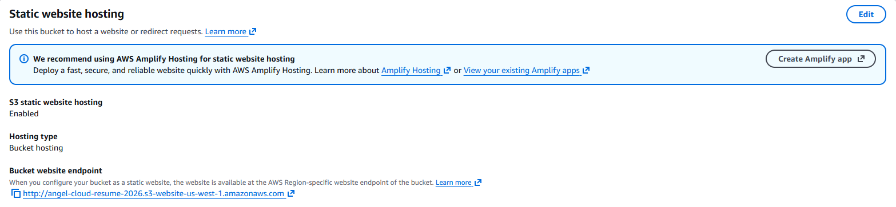
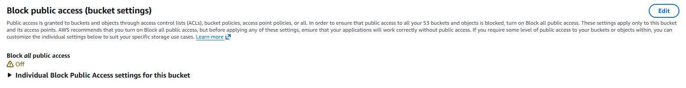
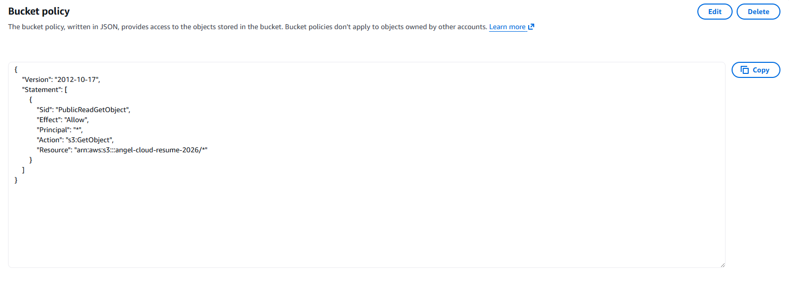
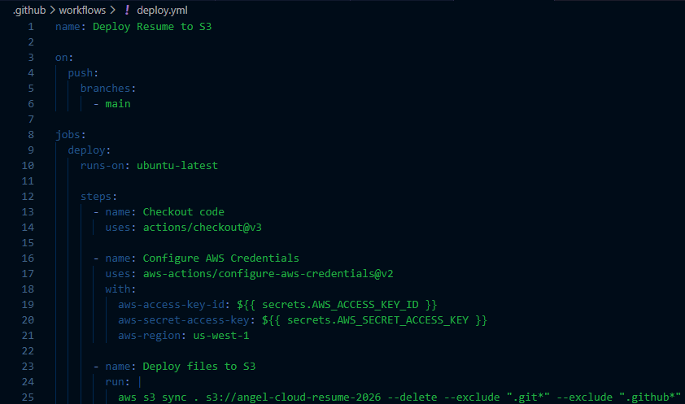
Workflow Trigger & Setup: The workflow is named, "Deploy Resume to S3" and when a push event occurs onto the main branch, it runs on an Ubuntu-latest runner. This runner provides a fresh Linux environment in order to execute the deployment process.
Code Checkout: The first step in the workflow uses the "actions/checkout@v3" action to clone the latest repository code into the runner's workspace. This step ensures that the runner has access to the most up-to-date version of the code and project files are available for proceeding deployment steps.
AWS Authentication: The second step in the workflow uses the "aws-actions/configure-aws-credentials@v2" action to securely authenticate with AWS using secrets stored in my GitHub repository (AWS_ACCESS_KEY_ID and AWS_SECRET_ACCESS_KEY). The region is set to us-west-1, the region in which my AWS resources are configured and API called are redirected to.
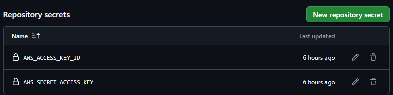
S3 Deployment: The final step of the workflow uses the AWS CLI's "aws s3 sync" command to synchronize the local project files with the S3 bucket named "angel-cloud-resume-2026". The "--delete" flag is included to remove any files in the S3 bucket that are no longer present in the local repository, ensuring removed repository files are also removed from the S3 bucket. This achieves accurate reflection of the current state of the project. The "--exclude" flag is used to exclude any hidden files (starting with a dot, .github* and .git*) from being uploaded to S3 bucket.
Security Considerations: We must never store sensitive credentials in version-controlled repositories or expose them in public code. Instead, these keys are stored in GitHub's encrypted secrets manager which also happens to be where this workflow retrieves them.
Repository Organization: Structure of the GitHub repository is organized in a way that allows for easy navigation and management of project files.
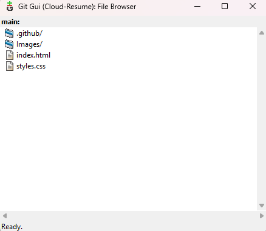
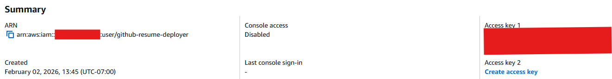
Above is the brief summary of user "github-resume-deployer". The summary lists the Amazon Resource Name (ARN) of the IAM user. It also displays console access as "Disabled", as this user is only intended for programmatic access via GitHub Actions. This user is also assigned an access key.
Below, we can see the policy name, "AmazonS3FullAccess". These policies are explicitly attached to this user, hence the attached via "Directly" section. Note this user has AmazonS3FullAccess permissions.
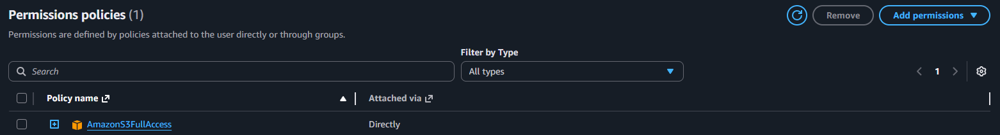
The following image displays an expanded view of the policy permissions. Here, the user has full access to S3 and S3 Object Lambda operations.
The JSON policy document defines the permissions granted to the IAM user "github-resume-deployer". It allows all actions ("s3:*") on all S3 resources ("arn:aws:s3:::*"), effectively granting full access to S3 services.
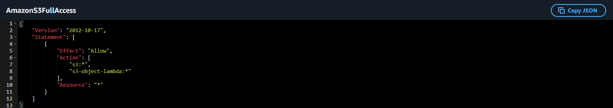
Purpose: Demonstrate advanced use of Excel functions, formulas and tools. Showcased skills in data analysis, pivot tables, automation, and visualization. The goal was to answer a question related to data interpretation and analysis of varied criteria for insight.
- Which truck manufacturer accrues the most maintenenace costs? Download Full Analysis
- Realized Profits: In this worksheet, we use a multitude of functions to summarize total accrued costs of each manufacturer and subtract them from the total revenue to calculate realized profits.
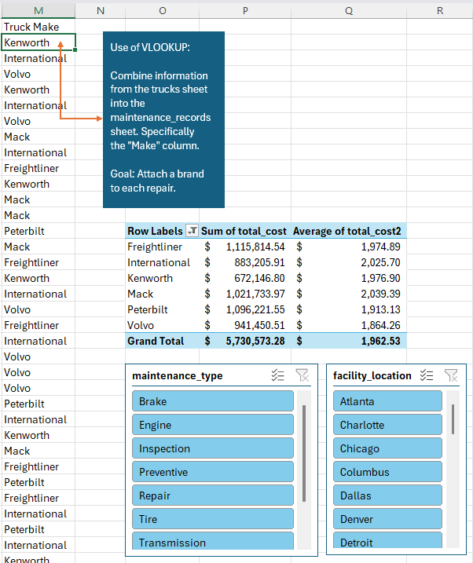
VLOOKUP Function: In order to answer the question, VLOOKUP was used to match truck IDs in the maintenance_records worksheet with the corresponding manufacturer information in the trucks worksheet. This allows for the creation of pivot tables that display maintenance costs by manufacturer.
Pivot Tables: Pivot tables were created to summarize and analyze the maintenance costs by manufacturer. The pivot table allowed for easy comparison of maintenance expenses across different truck manufacturers.
Slicers: Slicers were added to the pivot table to allow filtering of data by different criteria. This provides for a more in depth analysis of the data.
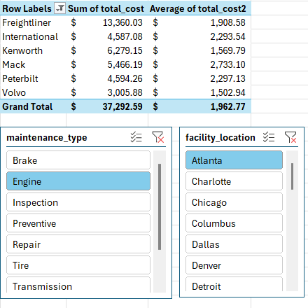
The image above displays further analysis. It uses the slicers to filter the pivot table data by maintenance_type and facility_location. Here, data displayed is that of costs accrued by engine maintenance in Atlanta, Georgia.
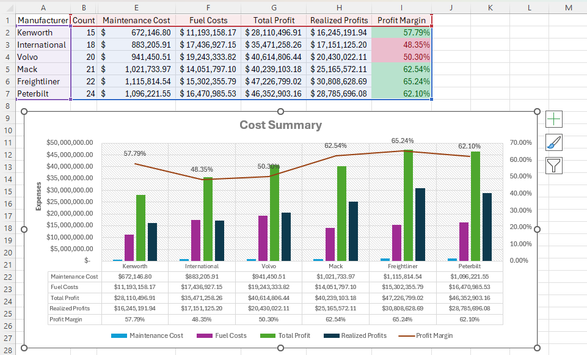
Unique: Use of the UNIQUE function to extract distinct values from a list of manufacturers.
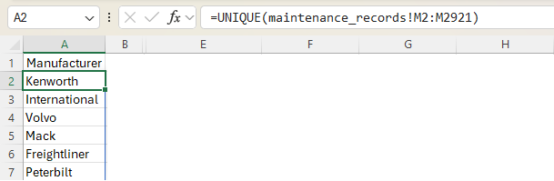
COUNTIF: Use of the COUNTIF function to calculate total number of trucks for each manufacturer.
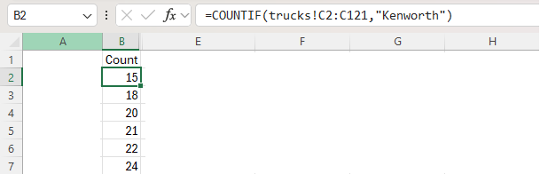
GETPIVOTDATA: Use of the GETPIVOTDATA function to extract specific data from a pivot table. In this case, it is the total maintenance cost of each manufacturer.
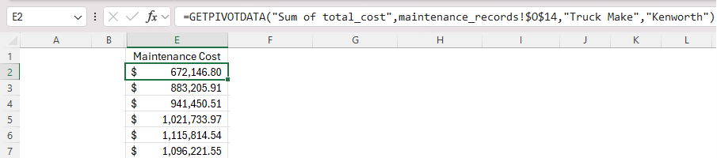
Equation for Realized Profits: The realized profits for each manufacturer are calculated by dividing realized profits by total revenue of each manufacturer.
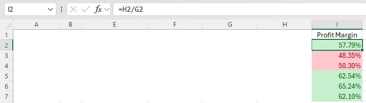
Note this column also has conditional formatting applied. Green fill is applied to manifactures with an above average profit margin. Underperforming manufacturers are highlighted in red fill.
Purpose: Engineer a scalable pipeline in order to transform e-commerce raw data into business insights using AWS services.
- Architecture: Designed a multi-tier S3 lake using Hive-style partioning. With this partioning style, we can optimize query performance and storage costs by minimizing the amount of data scanned during queries.
- Data Orchestration: Created and deployed an AWS Glue Crawler to connect to the S3 data lake and generate metadata tables for querying in AWS Athena.
- AWS Athena: The metadata tables created by the crawler are available in AWS Athena for querying using SQL.
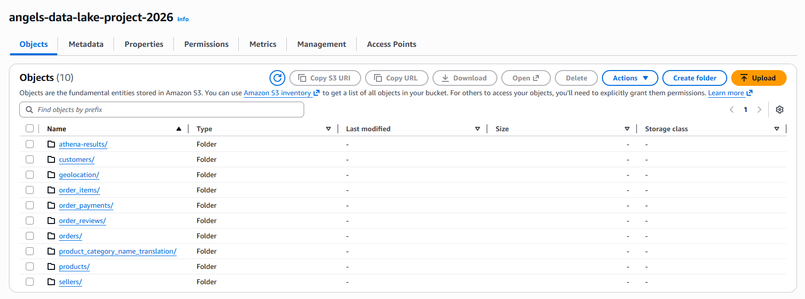
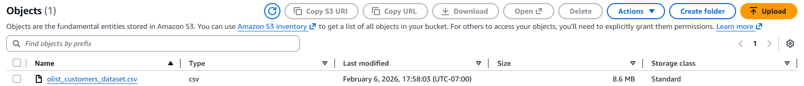
Note: The architecture is designed to be scalable and cost-effective. Instead of having to scan through one file with multiple partitions, we can scan only the relevant partitions for each query. Note the second image displays an expanded view of one of the partition ("customers/olist_customers_dataset.csv")s.
Infastructure Management: In order to prevent the crawler from creating tables from the Athena query results into the olist_db, we must isolate the data lake from the Athena query results. This is done by ensuring that the dedicated S3 bucket used for storing the Athena query results is separate from the data lake bucket.
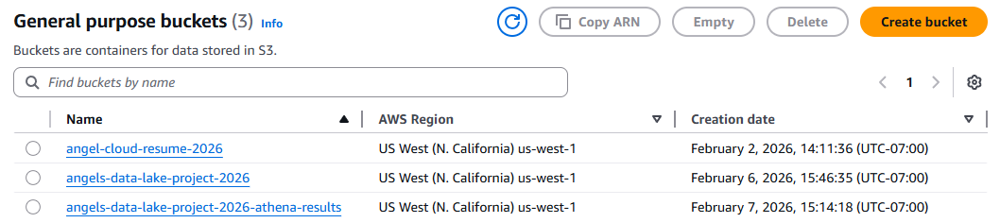
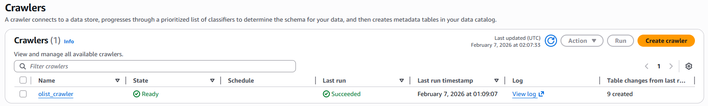
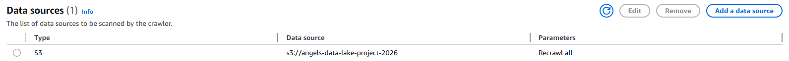
The data source of the crawler refers back to the newly created S3 bucket "s3://angels-data-lake-project-2026" used as the "data lake". It sotres each of the .csv files.
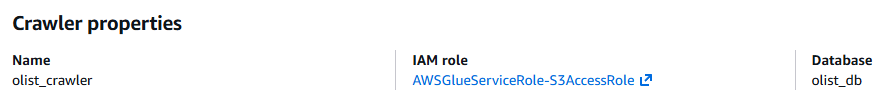
In the properties configuration above, we specify the crawler to use an existing IAM role with the necessary permissions to access the S3 bucket and create metadata tables. We also specify the crawler to update the "olist_db" database in AWS Glue Data Catalog with the generated metadata tables.
IAM Role: Specific permissions have been applied to the IAM role used by the crawler. The allowed permission policies include AWSS3ReadOnlyAccess and AWSGlueServiceRole. An expanded view of the IAM role permissions is shown in the image below.
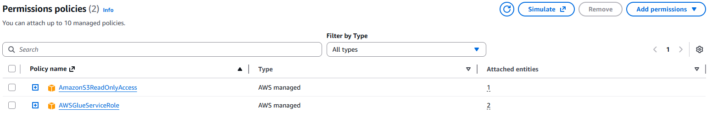
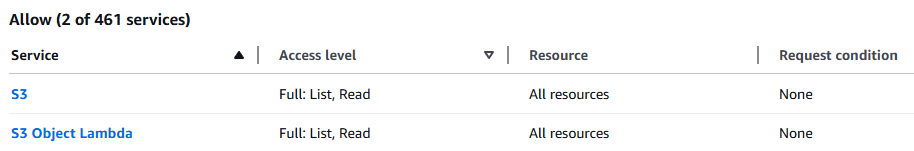
The "AWSReadOnlyAccess" policy grants read-only access to S3 buckets and objects. This is absolutely necessary for the crawler to be able to read the data in the S3 bucket and create metadata tables to fill AWS Glue Data Catalog.
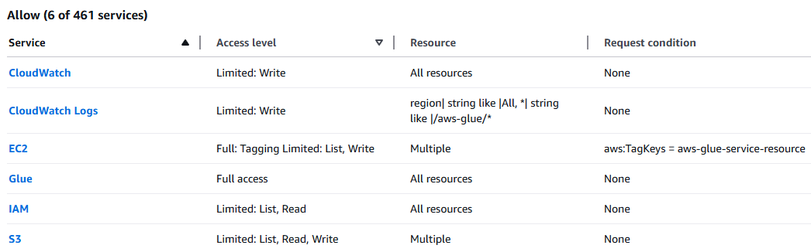
The "AWSGlueServiceRole" policy grants permissions for the crawler to create and manage metadata tables in AWS Glue Data Catalog. Everything from updating table definitions to creating new tables is allowed. This is necessary for the crawler to be able to create metadata tables based on the data in the S3 bucket and insert them into the "olist_db" database in AWS Glue Data Catalog.
In the following image, we see when running this crawler, the creation of 9 tables. These tables represent automated creation of metadata for each of the .csv files in the data lake.
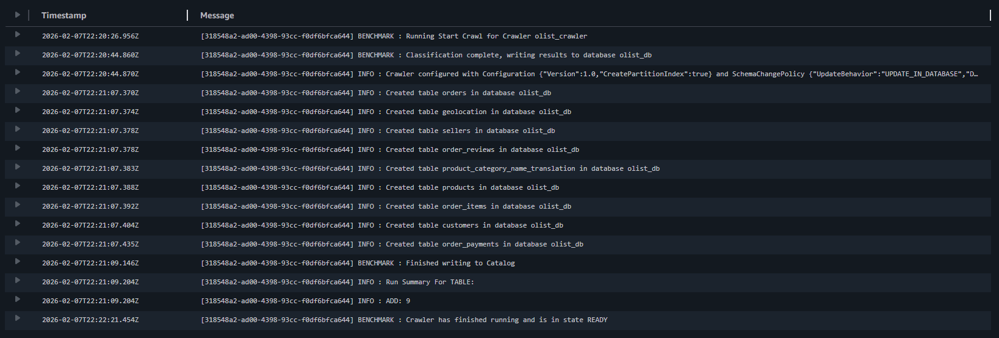
After the crawler finishes running, we can query the metadata tables in AWS Athena. Thanks to the Crawler, metadata tables have been created and insterted into "olist_db".
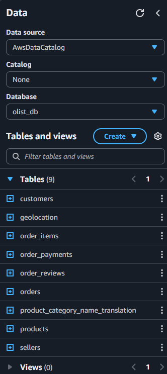
Task 1: Identify "VIP" customers. VIP customers are determined by the amount of orders placed and the total amount of said orders. Below is the Athena query that identifies VIP customers:
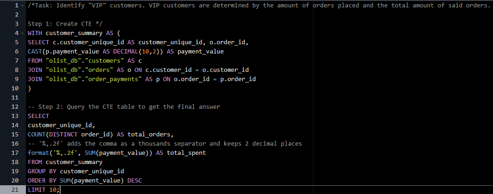
In this query, we join the "orders" table with the "customers" table using the "customer_id" column. We also join the "order_payments" table with the "orders" table using the "order_id" column. Notice how the Common Table Expression (CTE) is used to simplify the query and make it more readable. It also uses CAST to convert the payment value from a string to a numeric value for proper aggregation. The CTE query uses COUNT for counting the total amount of orders each unique_customer_id has placed and SUM for summing the payment amounts (payment_value) with alias "total_spent".
Result: The query returns a top 10 list of customers who are classified as VIP based on their total spending and number of orders.
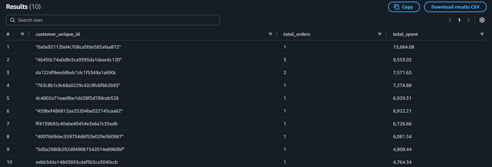
Task 2: There has been a growing amount of customer complaints coming from Sao Paulo. Olist requests product names, order_ids, delivery dates, customer ids, and order reviews. Identify customers within the Sao Paulo region, include Order_IDs, delivery date, product category name, and the customer review.
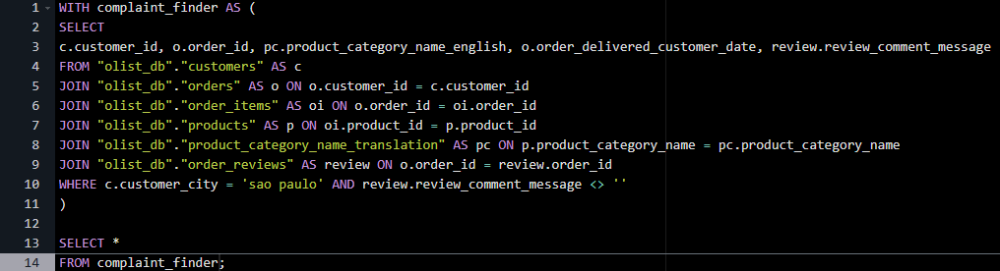
In this query, we join multiple tables in the CTE and assign them aliases for clarity and readability. A noteable difference to the prior query is that we are now filtering for customers in the Sao Paulo region using the "customer_city" column. The query results in over 10,000 rows of data.
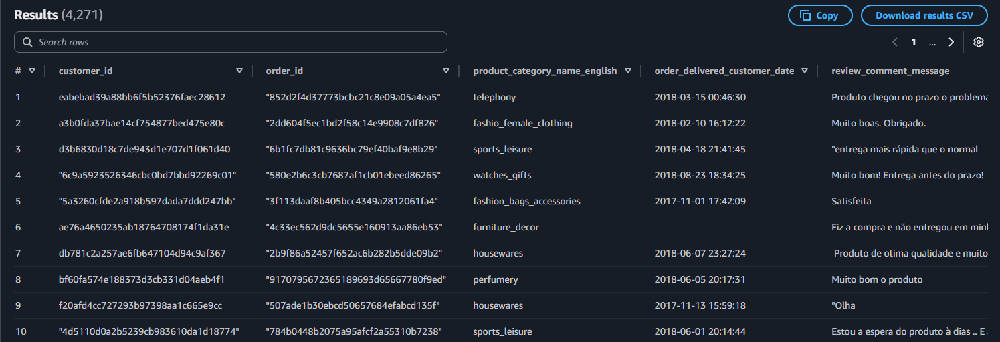
Notice that the results include customer complaints from Sao Paulo, with their respective order IDs, delivery dates, product category names, and customer reviews. The query omits any rows where the customer review is null or empty. Without the omit option, the query returns more than 10,000 rows of data!
Task 3: Identify products with the highest average shipping cost. Include the english product name, average shipping cost, and total number of orders for each product.
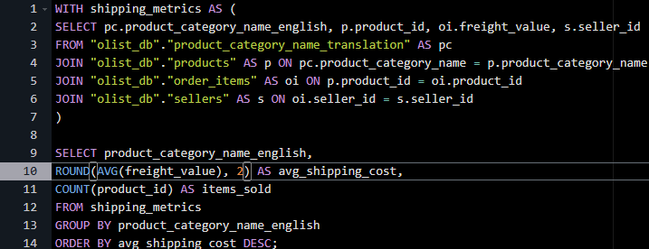
Result: The query returns a list of products with their average shipping costs and total number of orders. Duplicate product names are removed thanks to the GROUPED BY clause.
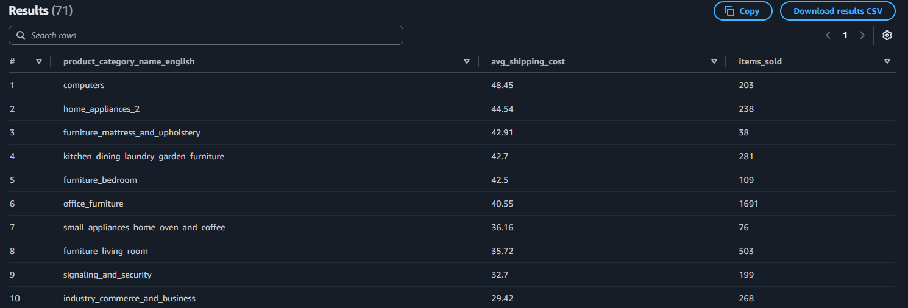
Purpose: To analyze the financial and operational impact of safety incidents across the North American logistics network and identify high-risk drivers.
- Tableau Connections: Established relationships between source data tables in Tableau.
- Cost Hotspots: Six facilities (FAC00005, FAC00010, and FAC00014, FAC00018, FAC00022, FAC00025) significantly exceed the network average for costs. These facilities account for a major share of the total liability.
- Preventable Cases: Approximately 40% of incidents are flagged as "Preventable," indicating a significant opportunity for cost recovery through initiatives such as targeted driver training.
- Equipment Integrity: Specific truck IDs show recurring incident patterns, suggesting a potential correlation between vehicle maintenance/age and driver safety performance.
- Geographic Risk: The data shows that incidents are not evenly distributed across all regions. Some geographic areas have higher incident rates, indicating a need for targeted safety initiatives in those regions.
- Summary: The analysis reveals key insights into incident patterns and cost drivers, providing actionable intelligence for improving safety and reducing liability.
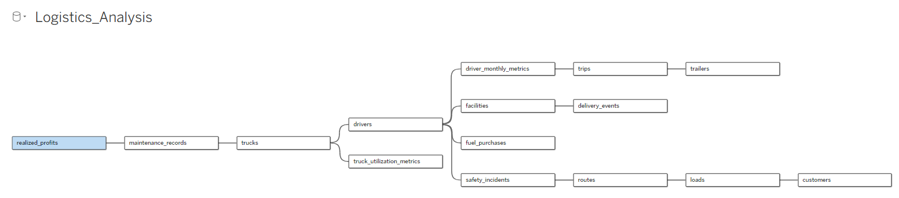
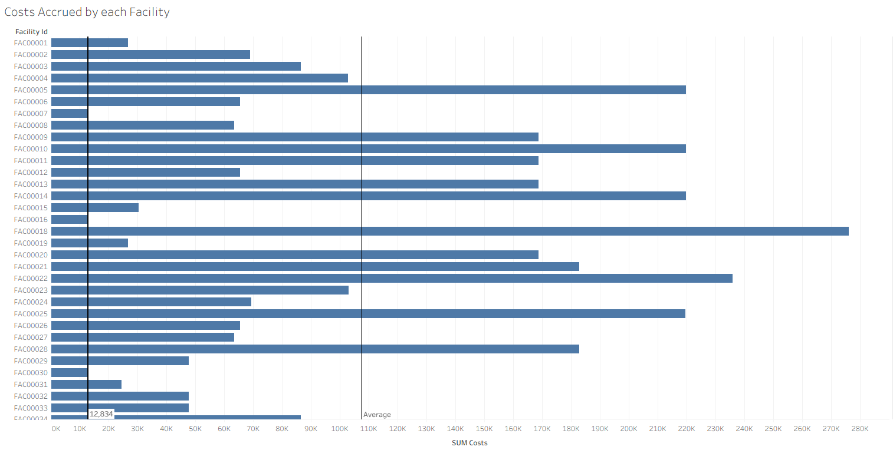
Note the verticle black lines on the sheet. The outermost left line represents the constant cost, while the second line represents the average cost for each facility ($107,575).
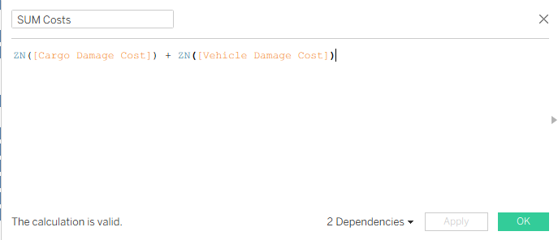
Formula used to calculate total costs for each facility in Tableau. ZN was used to handle null values in the SUM calculation.
Using the data from this simple dashboard, we can conclude that about 40% of incidents could have been avoided.
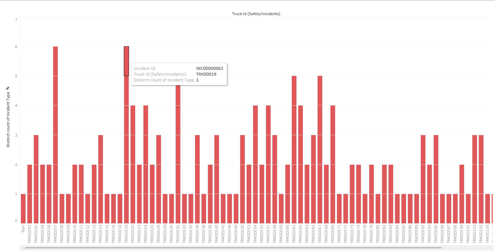
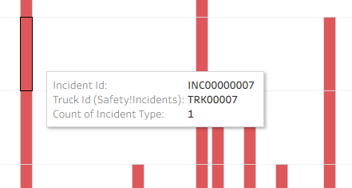
This dashboard displays individual truck incident data for each truck ID. Each incident is shown as individual data points and counts if a truck has had reocccuring incidents. Trucks TRK00007 and TRK000019 show the most incidents.
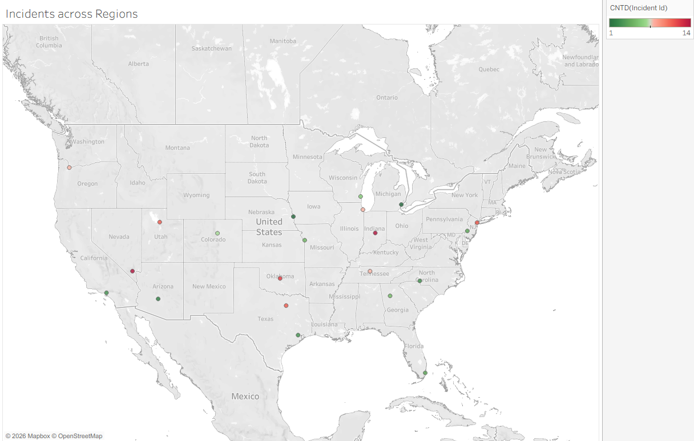
The map shows the geographic distribution of incidents across different regions. The darker shaded red areas indicate higher incident rates, while a lighter green shaded area indicates lower incident rates.
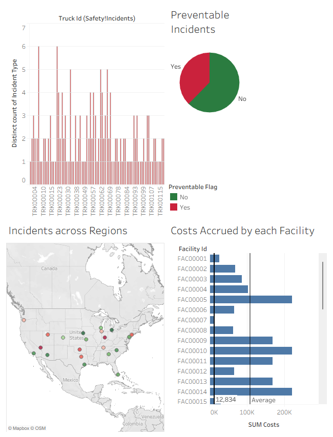